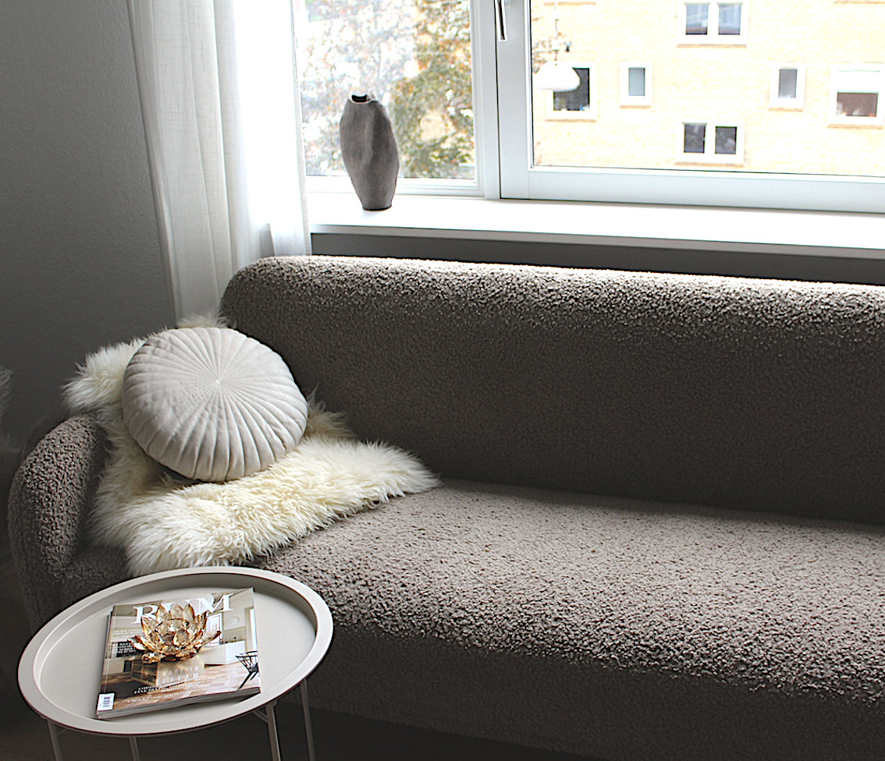
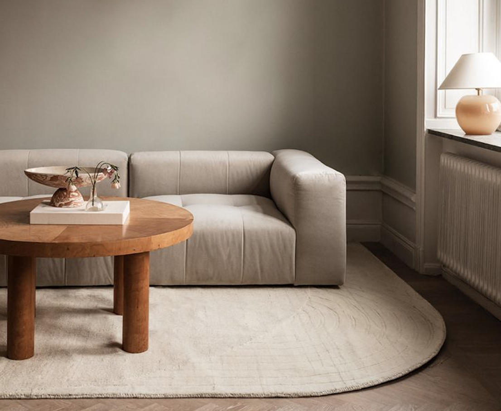
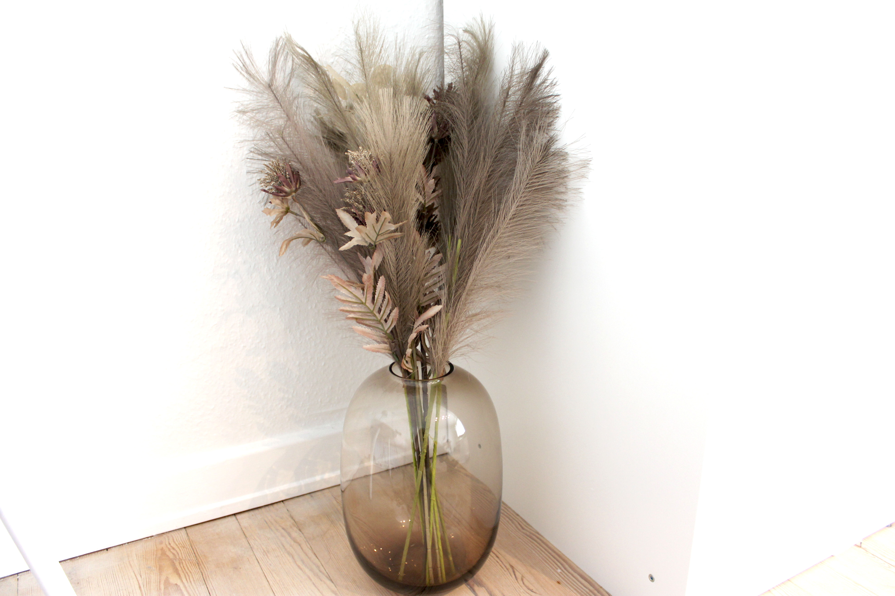
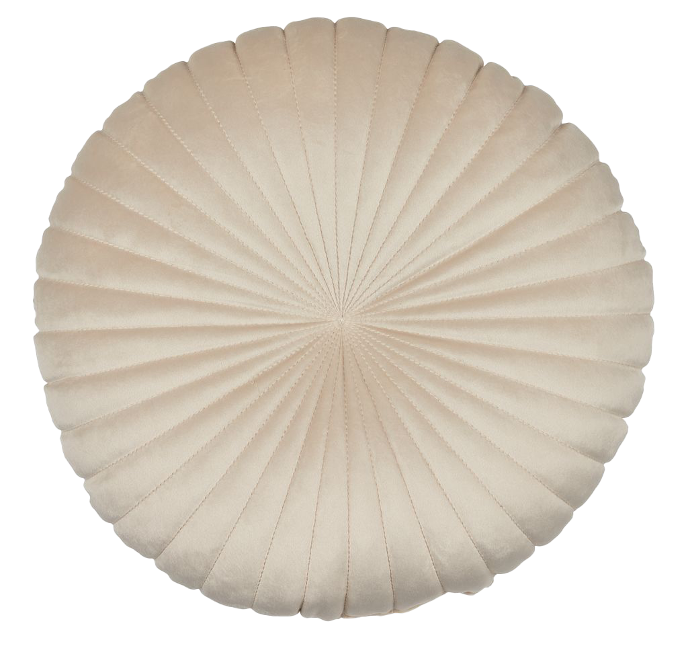

Drømmer du om at forvandle din stue til et flot og stilfuldt rum uden at sprænge budgettet? Det behøver ikke være dyrt at indrette med stil! Denne guide vil hjælpe dig med at prioritere budgetvenlige løsninger, der skaber en moderne og hyggelig atmosfære. Med lidt kreativ tænkning kan du få et eksklusivt look til en brøkdel af prisen!
Foto: En moderne stue der kombinerer stil og funktionalitet uden at sprænge budgettet
Hyggelig og flot indretning af stuen uden at sprænge budgettet
At skabe en stilfuld og moderne stue behøver ikke at være en dyr affære. Start med at fokusere på nøgleelementer som multifunktionelle møbler, eksempelvis en sovesofa eller et sofabord med opbevaringsplads. Disse valg giver ikke kun stil, men hjælper også med at udnytte pladsen maksimalt, hvilket er særligt vigtigt i små rum.
ingen tekst her
Sovesofa


med stil og komfort
En flot billig sovesofa kan være et stilfuldt valg, der ikke går på kompromis med hverken design eller komfort.
I en lille stue giver den mulighed for at udnytte pladsen optimalt, samtidig med at den tilbyder ekstra soveplads til overnattende gæster.
Med moderne designs og praktiske funktioner som chaiselong og opbevaring, kan en sovesofa løfte din indret- ning og skabe en hyggelig og funktionel atmosfære uden at sprænge budgettet.
Find mere inspiration til en minimalistisk indretning her
ingen tekst her
Dekoration
Når du indretter, er det vigtigt at finde en balance mellem æstetik og funktionalitet. Vælg dekorative elementer, der både er praktiske og pynter i rummet.
For eksempel kan en billig vase tilføje stil og samtidig fungere som et blikfang på sofabordet. Små detaljer som disse kan skabe en hyggelig indretning, der kombinerer elegance og varme uden at koste en formue.

En stor gulvvase er en enkel og overkommelig måde at skabe et iøjne- faldende og stilfuldt indtryk i din indretning.
Selvom den ikke behøver at koste en formue, kan den tilføje en følelse af luksus og personlighed til ethvert rum. En billig gulvvase gør det muligt at opnå en impone- rende effekt uden at sprænge budgettet, hvilket gør den til en populær løsning for dem, der ønsker at opdatere deres hjem med minimal indsats

Husk, at det vigtigste er at skabe et rum, hvor du føler dig hjemme. Giv dig selv lov til at eksperimentere og have det sjovt med indretningen.
Med lidt tålmodighed og kreativitet kan du opnå en fantastisk indretning uden at tømme din pengepung. . Ved at vælge møbler som en flot billig sovesofa til den lille stue eller et billigt rundt sofabord, kan du nemt få både funktionalitet og æstetik til at gå op i en højere enhed. Så kom i gang med at forvandle din stue til et stilfuldt og budgetvenligt rum, der vil imponere både dig selv og dine gæster!